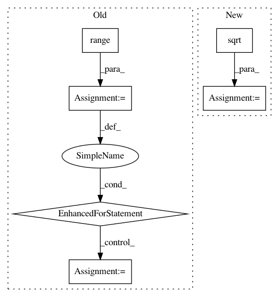

244aafdcf89ae814975c8c4e3faf0bd4995c7878,rllib/utils/exploration/tests/test_curiosity.py,OneHotWrapper,observation,#OneHotWrapper#Any#,29
Before Change
colors = one_hot(obs[:, :, 1], depth=6)
states = one_hot(obs[:, :, 2], depth=3)
// Is the door we see open?
for x in range(7):
for y in range(7):
if objects[x, y, 4] == 1.0 and states[x, y, 0] == 1.0:
print("Door OPEN!!")
all_ = np.concatenate([objects, colors, states], -1)
ret = np.reshape(all_, (-1, ))
direction = one_hot(
np.array(self.agent_dir), depth=4).astype(np.float32)
After Change
self.frame_buffer.append(np.zeros((self.single_frame_dim, )))
if self.vector_index == 0:
if self.x_positions:
max_diff = max(
np.sqrt((np.array(self.x_positions) - self.init_x)**2 +
(np.array(self.y_positions) - self.init_y)**2))
self.x_y_delta_buffer.append(max_diff)
print("100-average dist travelled={}".format(
np.mean(self.x_y_delta_buffer)))
self.x_positions = []
In pattern: SUPERPATTERN
Frequency: 4
Non-data size: 6
Instances
Project Name: ray-project/ray
Commit Name: 244aafdcf89ae814975c8c4e3faf0bd4995c7878
Time: 2020-09-05
Author: sven@anyscale.io
File Name: rllib/utils/exploration/tests/test_curiosity.py
Class Name: OneHotWrapper
Method Name: observation
Project Name: geekcomputers/Python
Commit Name: 139259ac8ac83160502cbb896371ce4fa4027361
Time: 2019-10-10
Author: ml.smiley3@gmail.com
File Name: primelib/primelib.py
Class Name:
Method Name: sieveEr
Project Name: keras-team/autokeras
Commit Name: c99295e1903952b3b806c4fd641e28f852b17c36
Time: 2018-04-18
Author: jhfjhfj1@gmail.com
File Name: autokeras/utils.py
Class Name: ModelTrainer
Method Name: train_model